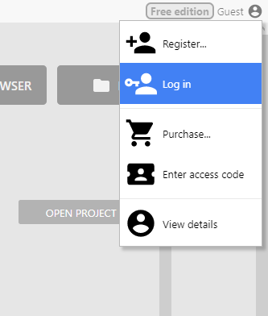
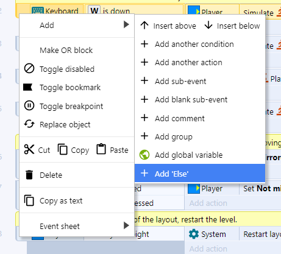
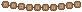
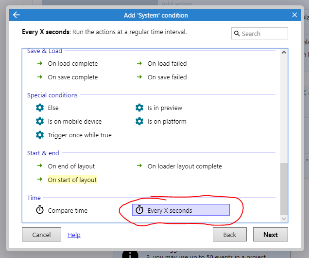

Construct 3
Construct 3O que é?Primeiros passos no Construct3Vendo exemplosJogos prontosModelos (Templates)Vamos começar...Criando uma nova contaCriando um novo projetoConfigurando o armazenamento em NuvemAbasAba LayoutÁrea de LayoutMenu de PropriedadesMenu ProjetoTilemapLayersDicasAdicionando um Objeto ao jogoVamos começarBackgroundPlataformaAdicionando o personagemBox collisionMudando as propriedades do PlayerAdicionando animaçõesEditando a Collision BoxMudando a origemAdicionando partículasAba Event SheetTipos de eventosEvento do tipo AND / EEvento do tipo OR / OUInvertElse (Senão)Começando a programaçãoFazendo o player pararFazendo o player olhar para a direção corretaPulando, caindo e poeiraComo o Construct executa a event sheet?CâmeraPlataformas e Plataformas móveisColecionáveisParte visualParte LógicaInterface com o usuárioSprite FontCheckpointsRedimensionando o cenárioInimigosSistema de vidasProjéteisVidasSonsOnde baixarImportando sonsEstruturas comunsDicasDicasDicas de programaçãoLinks
O que é?
- Construct 3 é uma ferramenta para a criação de jogos 2D voltada para não programadores;
- A versão 3 do Construct é baseada na plataforma web, ou seja, nada precisa ser baixado ou instalado no computador, o acesso pode ser feito por um browser atualizado como Google Chome, Mozila Firefox, Opera, Safari etc.;
- Foi desenvolvido pela Scirra Ltda e a primeira versão foi lançada em 2007;
- Permite a criação rápida de jogos por meio do sistema drag-and-drop (arrastar e soltar);
- No Construct entender a lógica de como um jogo funciona é mais importante do que saber alguma linguagem de programação já que o código do jogo é feito de forma visual por meio de blocos;
Primeiros passos no Construct3
Vendo exemplos
Jogos prontos
- A ferramenta pode ser acessada pela URL: editor.construct.net;
- Se você preferir pode usar a versão desktop da ferramenta (download em: C3 Desktop);
- Já na página inicial você pode encontrar alguns exemplos de jogos prontos e de modelos, os modelos são muito úteis para entender como alguns comportamentos simples funcionam;

Exemplos de jogos prontos
Modelos (Templates)

Modelos para jogos
Você pode clicar no ícone do projeto ou em "Open project" para abrir um desses projetos. Se ele for um modelo, você pode criar seu jogo tranquilamente se salvar como um jogo separado.
Vamos começar...
Criando uma nova conta
Como usaremos a versão gratuita do Construct, é necessário que criem uma conta no site pois com uma conta e com o e-mail verificado algumas opções são desbloqueadas:

Funções disponíveis na versão gratuita sem login:

Funções disponíveis na versão gratuita com login
Para criar uma nova conta vá em guest e então em register:
 Menu para a criação da conta
Menu para a criação da conta
Preencha o formulário com um nome de usuário, e-mail (algum que você tenha acesso fácil já que um e-mail será mandado para ele) e uma senha:

Formulário de criação de conta
Você receberá um e-mail de confirmação (caso não receba não esqueça de verificar a lixeira)

E-mail recebido
Abra o e-mail e clique no link de confirmação

Mensagem
 Conta verificada
Conta verificada
Agora volte para o site do Construct 3 e faça login na conta que você criou
 Botão de login
 Campos de login
Campos de login
Criando um novo projeto
Clique no botão NEW PROJECT e coloque as configurações conforme as da imagem, então clique em Create

Name: "MyFirstPlatformer"
- Pode ser o nome que você quiser, mas é melhor colocar algo que te ajude a encontrar o arquivo
Choose preset: "Retro style"
- Aqui é escolhida a resolução do jogo, como o jogo terá o estilo 16-bits, escolhemos o RetroStyle
Viewport size: "320 x 180"
- Esse valor não precisa ser alterado
- Aqui é escolhida a área que a câmera do jogo vai "filmar", indica o tamanho do retângulo pontilhado que você vai ver a seguir
Orientations: "Landscape"
- A orientação do jogo define se a tela será mostrada na Horizontal ou Paisagem (Landscape), na Vertical ou Retrato (portrait) ou Ambos (any)
- Como será um jogo para computador, definimos a orientação como Paisagem
Optimize for pixel art: [x]
- O jogo terá um estilo retro, por isso marcamos a opção de otimizá-lo para pixel art
Clique em Create e a ferramenta de edição será aberta

Configurando o armazenamento em Nuvem
Antes de tudo, vamos configurar o armazenamento e salvamento automático do seu jogo em nuvem. Será guardado como um arquivo no seu Google Drive, OneDrive ou Dropbox. É preciso autorizar o Construct a salvar e ler os arquivos do jogo de uma dessas contas.
Vá em Menu > Project > Save

Nesse exemplo, será utilizado o Google Drive, mas os passos são muito semelhantes para as outras ferramentas.
Faça login em sua conta:

Permita o acesso do Construct3:

Use a ferramenta para criar uma nova pasta e salve o projeto nela:

Se você preferir, pode baixar uma cópia do jogo a qualquer momento e guardá-la com você, vá no seguinte menu:

Caso você queira carregar esse arquivo que baixou, use a opção load from file na página inicial:

e selecione o arquivo baixado
Abas
Pronto, agora o projeto foi criado e o backup está configurado, vamos começar a entender a interface
Na ferramenta, existem dois tipos de abas:
- Layout
- Event Sheet

- Na aba layout é feito tudo relacionado a parte gráfica e configurações do jogo
- Na aba event sheet é feito tudo relacionado a programação do jogo
Aba Layout
Área de Layout
No layout você perceberá que existem dois retângulos, um retângulo brando e uma área pontilhada dentro dele

O retângulo maior define a área onde seu jogo vai acontecer, essa área é chamada de layout ou cena do jogo, é importante concentrar seu jogo nela já que para deixar o jogo mais rápido e economizar memória é comum que se delete algum elemento do jogo que esteja fora do layout.
O retângulo menor com lados tracejados define onde a câmera do jogo começará, ou seja, quando você rodar o jogo, o que estiver dentro do retângulo será mostrado na tela, por conta disso, é interessante começar o jogo por ele.
Menu de Propriedades
Conforme objetos forem adicionados, quando você clicar neles as propriedades serão exibidas nesta janela.

Menu Projeto

Nesse menu ficam todos os arquivos do jogo, inclusive os mostrados nas abas de Layout e Event sheet.
Dica:
Caso as abas Layout ou Event Sheet desapareçam, use este menu para abri-las novamente, você pode dar um clique duplo ou usar o botão direito do mouse.

Tilemap
 Este menu é utilizado para facilitar a criação do visual do seu jogo, você verá isso em detalhes nos próximos tópicos.
Este menu é utilizado para facilitar a criação do visual do seu jogo, você verá isso em detalhes nos próximos tópicos.
Layers
 O jogo pode ser dividido em camadas, esse menu é utilizado para gerencia-las, usando esse esquema você pode colocar objetos atrás ou na frente do cenário principal e ter um controle melhor disso, podendo deixar transparente todos os objetos que estão em uma determinada camada, por exemplo.
O jogo pode ser dividido em camadas, esse menu é utilizado para gerencia-las, usando esse esquema você pode colocar objetos atrás ou na frente do cenário principal e ter um controle melhor disso, podendo deixar transparente todos os objetos que estão em uma determinada camada, por exemplo.
Dicas:
- Se você tentou mudar o cenário e não conseguiu, verifique se o desenho do cadeado está marcado como fechado e clique para marca-lo como aberto, cadeado fechado indica que a camada não pode ser editada;
- Se você percebeu que o cenário que estava fazendo desapareceu, verifique se a caixa de checagem antes do cadeado está desmarcada, caixas desmarcadas indicam que o que estiver naquela camada não deve ser mostrado na tela;
Vamos começar mudando o nome dessa camada, clique no nome dela para seleciona-la, você verá que o conteúdo do menu de propriedades mudará.
Vá no campo name e mude o valor dele de layer 0 para game e aperte enter para confirmar:

Dicas
Menus sumiram
Se você perceber que algum dos menus citados anteriormente desapareceu, o coloque de volta usando o menu menu > View > Bars:

você perceberá que caso clique em um menu faltante (tirando os três últimos da lista que estão disponíveis apenas na versão paga do Construct) ele aparecerá na tela, você pode arrasta-lo para a posição que desejar.
 Nomes
Nomes

Sempre renomeie os objetos do jogo para o que eles representam, isso será muito útil e facilitará seu trabalho na hora da programação.
Use F2 com o mouse sob o campo que quer editar ou use a ferramenta de renomear.

Teclas de atalho e uso do mouse
- Use a tecla
F11para colocar ou tirar a ferramenta da tela cheia; - Use
shift + roda do mousepara dar zoom no cenário; Aperte a roda do mouse e arrasteouespaço + arrastar o mousepara se mover pelo cenário;- Use a tecla
F2com o mouse em cima de um campo de texto para editá-lo; roda do mousepara se mover na vertical;shift + roda do mousepara se mover na horizontal;ctrl + epara ir ao event sheet;ctrl + lpara ir ao layout;
Adicionando um Objeto ao jogo
Tudo dentro do jogo é representado como objetos de vários tipos, o teclado é tratado como um objeto assim como o jogador é tratado como um objeto, mas eles são de tipos diferentes, portanto, realizam ações diferentes.
Vamos inserir um objeto que representa o teclado. Clique com o botão direito do mouse e escolha a opção insert new object:

Você verá a lista dos tipos de objeto:


Existem muitos tipos de objetos:
- Objetos para guardar informações;
- Para representar elementos visuais dentro do jogo;
- Para interagir com o usuário desde com o teclado até com a webcam;
- Para se comunicar com a internet e com as redes sociais;
Para começar, procure o objeto Keyboard e dê um clique duplo nele para adicioná-lo ao jogo.
Você verá que ele foi adicionado à pasta de tipos de objeto.
Esse processo se repetirá para todos os objetos que adicionaremos ao jogo, alguns dos mais utilizados são:
- Sprite: podem representar qualquer objeto no jogo, jogador, inimigo, cenário etc.;
- TiledBackground: utilizado para colocar uma imagem de fundo no jogo, você pode partir de uma só imagem e fazer com que ela se repita como um mosaico;
- Tilemap: utilizado para construir elementos de cenário, é comum que se coloquem os "blocos" que representam o cenário em uma só imagem, um tilemap permite separar cada bloco;
- Text: utilizado para escrever textos no jogo;
- Spritefont: funciona como o text mas a fonte é estilizada e tem como fonte um arquivo de imagem;
- Particles: se baseia em uma imagem para criar partículas no jogo como fumaça, poeira ou fogo, por exemplo;
- Gamepad, Keyboard, Mouse e Touch: são utilizados para interagir com os equipamentos que dão o nome a eles;
Vamos começar
Background
Adicione um novo objeto do tipo Tiled Backgound

Use a opção de pasta para selecionar o arquivo do computador.

Vá até a pasta onde estão os planos de fundo e escolha o arquivo Background/tiled_bg.png:

Com o arquivo importado, aumente o tamanho do tiled Background para que ele preencha todo o layout e um pouco mais.
As imagens de fundo são especialmente preparadas para que pareçam uma só quando colocamos várias delas lado a lado, funciona como um mosaico.

Plataforma
Adicione um novo objeto da mesma forma como você fez antes, mas dessa vez escolha o tipo Tilemap

Abra o gerenciador de arquivos e selecione a imagem Scenario/tilemap.png  Essa imagem possui vários blocos de 16 por 16 pixels que representam o chão do game
Essa imagem possui vários blocos de 16 por 16 pixels que representam o chão do game

Assim como o Tiled Background aumente o tamanho do objeto para que ele fique maior que a tela.
Dica: ao mudar o tamanho de objetos, você pode apertar Shift e arrastar o mouse clicando em uma das abas para mudar o tamanho do objeto sem fazer com que ele seja distorcido.
Mude a aba inferior de Layers para Tilemap, passando o mouse por cima dos desenhos você verá que a seleção é maior que o tamanho dos blocos, precisamos mudar isso indo nas propriedades e mudando os atributos.
Tile widtheTile heighpara16

Agora você pode clicar em uma célula no menu tilemap e usar a ferramenta lápis para desenhar o cenário do seu jogo

 Use para voltar ao mouse normal;
Use para voltar ao mouse normal; Use para pintar o cenário;
Use para pintar o cenário; Use para apagar algum erro;
Use para apagar algum erro; Use para pintar áreas maiores;
Use para pintar áreas maiores; Use para espelhar a célula selecionada;
Use para espelhar a célula selecionada; Use para rodar a célula selecionada;
Use para rodar a célula selecionada;

Adicionando o personagem
Abra a janela de criação de objetos e escolha um do tipo Sprite

Abra o gerenciador de arquivos e escolha a imagem Player\Decomposed\Idle\tile000.png ( ). Na pasta você verá que existem outros arquivos para fazer a animação de quando o personagem está parado, faremos a animação mais adiante.
). Na pasta você verá que existem outros arquivos para fazer a animação de quando o personagem está parado, faremos a animação mais adiante.

Clique na tela para adicioná-lo
Se você apertar o botão de executar verá que o jogador está flutuando


Isso acontece pois esse é um objeto do tipo Sprite, que não tem um comportamento definido, precisamos dar a ele o comportamento de plataforma


Se você apertar o botão para executar agora verá que o player irá atravessar o chão e cair para o infinito, isso acontece já que precisamos dar ao chão algum comportamento que permita a interação com o jogador
 Use o menu lateral para selecionar o Tilemap e entre no menu Add behavior, antes disso, aproveite para renomear os objetos para o que eles irão representar no jogo
Use o menu lateral para selecionar o Tilemap e entre no menu Add behavior, antes disso, aproveite para renomear os objetos para o que eles irão representar no jogo

Aplique o comportamento Solid

Agora o jogador e o cenário podem interagir um com o outro, mas você perceberá que existem vários problemas
- Em alguns lugares o jogador atravessa o chão ou fica flutuando em cima dele
- O jogador está muito rápido e pula muito alto (até sai da tela)
- Não existe animação de andar, pular ou olha para o lado certo

Vamos resolver esses problemas
Box collision
Para determinar se um objeto está encostando em outro usamos um conceito chamado Box collision ou Collision Polygon, como seria muito complexo para o computador usar as imagens que colocamos para determinar se dois objetos estão se tocando, ele desenha um polígono em cima desses desenhos para simplificar esse teste
No caso do chão, o construct colocou um quadrado como polígono, sendo que algumas formas são triangulares
Procure os tiles que não completam o quadrado completamente e dê um clique duplo em um deles

Clique no ícone da ferramenta de editar o polígono de colisão
 Você pode arrastar os quadrados vermelhos para mudar a forma do polígono. Dê um duplo clique em um deles para gerar mais um e clique uma vez e aperte
Você pode arrastar os quadrados vermelhos para mudar a forma do polígono. Dê um duplo clique em um deles para gerar mais um e clique uma vez e aperte Delete ou Backspace para removê-lo
Faça esse processo para todos os tiles que não forem quadrados completos. Precisamos repetir o mesmo processo para o sprite do jogador


Agora se você executar o jogo vai ver que a interação entre o personagem e o mapa está muito melhor
Mudando as propriedades do Player

Aqui estão alguns valores recomendados, você pode escolher os que quiser para seu jogo, mas é importante escolher com sabedoria já que você pode precisar reconstruir o cenário todo caso mude a forma como o jogador se move.
Note também que existe uma barra na parte inferior que diz o que o campo selecionado faz.
Adicionando animações
Dê um clique duplo no personagem. Note que há uma barra lateral indicando quais animações o personagem tem e uma outra na parte inferior mostrando os frames da animação corrente.
Vamos começar com a animação de quando o jogador está parado, mude o nome da única animação existente para idle

Na área dos frames escolha a opção Import Frames > From Files para dizer que iremos importar os frames da animação cada um de um arquivo

Selecione os arquivos em Tiles\Player\Decomposed\Idle e delete o quadro de número zero já que ele é o que estava anteriormente
Você pode usar a opção Preview para ver como a animação está

Como você pode ver, a animação acontece apenas uma vez e está muito lenta, vamos alterar isso.

Com a animação Idle selecionada, vamos definir a velocidade como 8 frames por segundo e vamos marcar a opção de loop

O mesmo processo deve ser aplicado para as animações

Idle
- Speed: 8
- Loop: sim
Shoot
- Speed: 20
- Loop: não
Jump
- Speed: 5
- Loop: não
Fall
- Speed: 5
- Loop: não
Run
- Speed: 14
- Loop: sim
Editando a Collision Box
Como adicionamos mais animações precisamos definir as caixas de colisão para elas, dessa vez faremos um trabalho mais preciso.
Segurando a tecla ctrl clique nos dois quadrados vermelhos acima do personagem, você vai selecionar ambos e eles ficarão amarelos, use a seta para baixo para mover a linha até a cabeça do personagem
 Repita o processo para os outros lados desta forma:
Repita o processo para os outros lados desta forma:
 Agora clique no personagem com o botão esquerdo do mouse e escolha a opção
Agora clique no personagem com o botão esquerdo do mouse e escolha a opção Apply to all animations

Agora todas as animações usarão esse mesmo polígono
Mudando a origem
Para garantir que todos os frames fiquem alinhados e para fazer o efeito de poeira saindo dos pés do personagem (que faremos logo a seguir) precisamos mudar a origem da imagem. O ponto de origem é o ponto utilizado para alinhar os frames de uma animação, vamos colocá-lo nos pés do personagem.


Use a opção para colocar o ponto de origem na parte de baixo da imagem
Agora aplique essa mudança para todas as animações
Adicionando partículas
Vamos colocar um efeito de poeira quando o jogador cair no chão, para começar, adicione um novo objeto do tipo Particles

Clique na tela para adicionar o objeto, na janela que irá abrir selecione o arquivo Particles/playerdust.png
É importante que esse objeto esteja no jogo mas não esteja visível , ou seja, ele deve estar fora do layout, quando precisarmos dele faremos que apareça nos pés do jogador.
Renomeie o objeto para podermos programar com ele mais facilmente mais tarde


Use a opção Z Order > Send to top of layer para traze o objeto para o topo da camada fazendo com que efeito apareça na frente do personagem
Defina as propriedades conforme a seguinte imagem
Aba Event Sheet
Nesta aba é onde ficará o código que definirá os comportamentos do jogo por meio de eventos
Um evento é uma condição ligada a um ou mais objetos do jogo, por exemplo: no game, o teclado será representado por um objeto do tipo Keyboard, pois são os objetos que podem lançar eventos, assim, podemos no código monitorar por algum evento específico, nesse caso, pode ser quando alguma tecla for pressionada ou solta, então podemos executar alguma ação quando esse evento ocorrer.


Alguns eventos comuns são:
Quando algum objeto do jogo está tocando outro
- Inimigo tocou no jogador: tirar pontos de vida do jogador
- Jogador tocou em uma moeda: faça a moeda sumir e adicione na pontuação do jogador
Quando o jogador está andando, pulando ou parado
- Mude para a animação correspondente
Lembre-se:
- Um evento é qualquer acontecimento dentro do jogo
- Posso criar um código que é ativado quando um evento ocorrer
- Posso decidir quais ações devem acontecer quando esse evento for acionado
Você pode criar um evento clicando em Add event

Será te perguntado a condição, ela tem que estar relacionada a um dos objetos do jogo

Uma lista de eventos daquele objeto aparecerá, você pode escolher qual deles você quer monitorar
Existem dois tipos de eventos
Eventos que não começam com
On- As ações serão executadas enquanto a condição for verdadeira
- Se a ação for fazer o personagem pular, ele irá pular repetidamente até você soltar a tecla
Eventos que começam com
On- As ações são executadas na primeira vez que a ação for verdadeira, ou seja, apenas no instante que o evento ocorrer
- Se a ação for fazer o personagem pular, ele irá pular uma vez e só pulará novamente se você soltar a tecla e apertá-la novamente


Tipos de eventos
Evento do tipo AND / E
Você pode precisar que mais de um evento esteja acontecendo ao mesmo tempo para executar algum bloco. Quando existe mais de uma condição e precisamos que todas sejam verdadeiras, usamos o AND
Inserindo uma nova condição

Outra forma de fazer isso

Um bloco do tipo AND fica dessa forma

Evento do tipo OR / OU
Num evento do tipo OR , o bloco é executado quando uma ou mais condições são verdadeiras.
Para fazer um bloco OR você precisa começar por um do tipo AND e usar a opção Make OR block

Ele ficará assim:

Você pode torná-lo um bloco AND usando a seguinte opção:

Invert
Caso você queira que o bloco seja executado quando uma condição não for verdadeira, use a opção invert

Um bloco com um invert fica assim:

Perceba que na imagem existe uma junção do bloco AND com o invert nesse caso, você pode ler essa condição como:
*"Execute as ações a seguir **se** A tecla W do teclado estiver sendo apertada E o player Não estiver pulando"*

Else (Senão)
Um bloco do tipo else é executado quando o que foi testado em um evento não ocorreu: você pode fazer o teste de algo e o seu inverso em um mesmo bloco.
Um bloco else é criado dessa forma:

O resultado será:

Você pode ler o else como: Execute essa ação se algo acontecer, caso contrário execute outra ação

Começando a programação
Primeiramente, vamos criar um grupo para conter os movimentos do jogador, isso será importante pois precisaremos desativar todos os movimentos na hora do jogador atirar a flecha


Como vamos adicionar os eventos ao grupo Player Movement, precisamos usar a opção Add event to 'Player Movement'

Selecione o Player, a condição vai ser baseada nele
Vamos começar criando o bloco onde a animação do jogador correndo será ativada quando ele estiver se movendo e estiver no chão, assim a animação de correndo não acontecerá quando o jogador estiver pulando

Se você executar o jogo agora vai ver que o jogador passa para a animação de correr quando as teclas direcionais são apertadas, mas não volta para a animação de parado. Isso não foi programado ainda...
Dica: agora é uma boa hora para rever a velocidade máxima que o player pode chegar e a velocidade da animação dele correndo para que os dois fiquem em sincronia.
Fazendo o player parar

Fazendo o player olhar para a direção correta

Se você não tem o Objeto Keyboard adicionado ao projeto, adicione-o
Crie um novo evento partindo do objeto teclado e escolha o evento On key pressed e aperte a seta para a esquerda para definir que queremos que código seja executado quando a tecla para a esquerda for pressionada

Pulando, caindo e poeira


Como o Construct executa a event sheet?
É preciso lembrar que, no Construct, todas as ações programadas precisam ser precedidas por um evento, pode-se dizer que, quando algo acontece no jogo um evento é disparado no código e ações são tomadas.
Mas como o jogo sabe que alguma ação aconteceu no jogo?
É simples, você pode enxergar a event sheet como uma lista de condições, o construct percorre todas elas em loop, testando se alguma condição é verdadeira se for, as ações associadas a essa condição são executadas.
O tempo para percorrer todo o código é chamado de tick, é um conceito parecido com o FPS (frames per second) de um jogo ou vídeo, onde um frame representa uma das foto instantânea em cada momento do jogo, então, mais FPS representam mais fotos por segundo, da mesma forma, em um computador mais rápido, o código é executado em menos tempo e o tempo entre um tick e outro é menor então em poucos segundos cabem mais ticks.
Câmera
Nossa câmera será representada por um objeto do tipo Sprite, precisamos:
- Criar um novo sprite
- Pintá-lo de uma cor para que possamos vê-lo durante a programação
- Mudar seu nome para
Camera - Marcar em suas propriedades que quando o jogo iniciar deve ser invisível
- Fazer a programação associada


Vamos adicionar um evento do tipo System > Every tick fora do grupo Player Movement

Para suavizar o movimento da câmera vamos usar a função lerp, ela causará um atraso no movimento da câmera num fator de 0.03 ao ir da posição x,y de onde está (Self) até a posição x,y do jogador (Player)

Uma função na programação funciona de maneira muito parecida com uma função na matemática, uma função é algo que:
Tem um nome e recebe um valor de entrada como:
Faz algum cálculo baseado em uma fórmula:
E retorna algum valor como saída

Uma forma mais simples de fazer a câmera (mas não tão boa):

Plataformas e Plataformas móveis
Vamos adicionar três sprites ao jogo, eles deverão receber como imagem
Scenario/mov1-sheet0.png
Scenario/mov5-sheet0.pngScenario/bridge-sheet0.png
Vamos renomeá-los da seguinte forma:

Vamos aplicar aos três o Behavior de Jump Tru que fará com que o personagem possa ficar em cima deles, mas que ao pular por baixo os atravesse.
É importante também ter as caixas de colisão feitas para que o personagem possa andar na plataforma

Agora vamos fazer com que o objeto MovingPlatform se torne uma plataforma que se move. Adicione o comportamento Sine

Configure-o da seguinte forma
Você pode alterar esses valores para ter o efeito desejado,
- mude a direção em
Movement: HorizontalouVertical - Use o atributo
Periodpara alterar o período do movimento, isto é, o tempo de cada ciclo - Use o atributo
Magnitudepara alterar o tamanho do movimento
Dependendo do efeito que quiser passar você pode mudar o tipo da onda em Wave
Sine: acelera no meio do movimento e desacelera quando vai mudar de direçãoTriangle: permanece com a mesma velocidade, sem desacelerar para mudar a direçãoSquare: irá aparecer e desaparecer nas pontas de onde o movimento ocorreSawtootheReverse Sawthooth: vai para a direita (ou esquerda), some e volta a origem

Dica: na hora de posicionar a plataforma que se movimenta no layout, coloque-a no meio da área que deve cobrir com o movimento
Dica: depois de ter todas as plataformas prontas você pode criar uma cópia facilmente clicando e arrastando uma plataforma pronta enquanto segura a tecla crtl
Colecionáveis
Parte visual
Crie um objeto do tipo Sprite para representar as moedas, crie duas animações com base nas imagens em Items\Coin_spin e Items\Coin_shine


Você pode usar a mesma técnica para duplicar objetos ensinada antes e definir qual vai ser a animação que deve ocorrer na moeda da seguinte forma:

Parte Lógica
O primeiro passo é criar uma variável de instância ao Player. Uma variável de instância é um campo que nos permite guardar um valor como um número ou um texto junto com algum objeto, nesse caso o objeto Player


Nosso objetivo é criar esse bloco:

Para a primeira linha escolha Coin > Destroy
Para a segunda use o Player > Add to conforme as imagens

Agora vamos criar uma variável global para guardar a quantidade total de moedas


Você pode querer colocar o efeito de física na moeda, com ele é possível fazê-la interagir com as flechas que o jogador vai lançar e colocar o efeito delas sendo "sugadas" em direção ao jogador quando ele se aproximar delas.
Para isso você precisará:
- Aplicar o comportamento
Physicsàs moedas
- Aplicar o comportamento de física ao cenário e garantir que a opção
Immovableestá marcada
- Criar o seguinte bloco que fará as moedas serem atraidas para o jogador

Para isso, faça o seguinte
Crie um novo evento do tipo System
Escolha a opção for each
Escolha a opção Coin
No bloco criado, escolha a opção Add another condition
Escolha system novamente
Escolha a opção Compare two values
Coloque os seguintes valores

O for each executará esse código para cada moeda e testaremos para cada uma delas se a distância no plano cartesiano entre ela e o jogador é menor que 40 px, se for ela irá na direção dele:
Para fazer a moeda ser sugada, faremos o seguinte:
dt é a quantidade de ticks que o jogo tem, em computadores mais rápidos, o tick é menor, em mais lentos é maior, como a força será aplicada a cada tick, precisamos garantir que ela será a mesma para computadores mais rápidos e mais lentos, assim, com 3 * dt fazemos com que:
- Num computador mais lento a ação de aplicar uma força que acontece menos vezes ocorra com mais força
- Num computador mais rápido a ação de aplicar uma força que acontece mais vezes ocorra com menos força
Dessa forma o efeito será o mesmo independentemente da plataforma.
Interface com o usuário
Sprite Font
Uma Sprite Font funciona como uma fonte no computador como Times New Roman ou Arial, mas as letras podem ser estilizadas e são armazenadas todas em um mesmo arquivo.
Crie um novo objeto do tipo Sprite Font

Defina como imagem o arquivo Fonts/font30b.png 
Não esqueça de renomear o objeto

Vá nas propriedades desse objeto e deixe-as assim:

Se a configuração foi feita corretamente você conseguirá ler 0/0 COINS no objeto, arraste-o para o topo esquerdo da tela

Se você executar o jogo agora perceberá que o texto aparece, mas que quando o personagem anda o texto sai da tela, para resolver isso precisamos criar uma nova camada para colocar a interface com o usuário.


Vamos colocar o texo nessa nova camada
Clique no nome da interface e mude o atributo parallax para 0, 0, isso impedirá que o texto fique "vibrando" na tela

Agora vamos para a parte da programação. Esse é o resultado que queremos atingir

Para fazer isso precisamos escolher o objeto System e escolher a opção Every x seconds e definir como 0.1 segundos


Vamos escolher nas ações o objeto CoinSpriteFont e usar a opção Set text. Vamos colocar o seguinte texto: Player.Coins & " /"& TotalCoins & " COINS"
Esse texto irá gerar algo do tipo 5 / 10 COINS, representando quantas moedas o jogador pegou de um total:
Player.Coins estamos acessando a variável de instância que colocamos no objeto player, o programa guardará nela a quantidade de moedas que o jogador pegou.
TotalCoins é uma variável global, ela não está em nenhum objeto do jogo, por isso não precisamos colocar algo como Player.TotalCoins
Tudo que foi colocado entre aspas "text" é considerado um campo de texto e não comandos ou números
O operador & é chamado de operador de concatenação ele consegue juntar os campos de texto com os valores numéricos nas variáveis que referenciamos


Checkpoints
Checkpoints são locais onde o jogador pode renascer caso tenha morrido, assim ele não perderá o progresso que fez no jogo até aquele ponto.
Nossos checkpoints serão representados por tochas que podem ser acendidas ou apagadas. Uma tocha acendida indica que o jogador já passou por aquele checkpoint e uma tocha apagada indica que ainda não passou. Vamos dar a ideia de que o jogador está acendendo as tochas ao tocar nelas.
Por fim, quando o jogador morrer, deverá reaparecer na última tocha que acendeu.

Vamos começar pela parte visual, precisaremos de três arquivos, dois deles serão objetos do tipo Sprite (a tocha e a luz ao redor dela) e um dele será um objeto do tipo Particles (o fogo)
Vamos adicionar a tocha, adicione um novo objeto do tipo Sprite e coloque a imagem que está no arquivo Scenario/torch-sheet0.png 
Nós iremos fazer partículas que representam fogo aparecerem no topo da tocha, para isso usaremos o ponto de origem, por isso, precisamos deslocá-lo para o topo da imagem, A forma mais simples de fazer isso é indo no menu de edição dos pontos, clicar com o botão direito do moude em Origin e escolhendo a opção Quick Assign > Top

Defina o nome desse objeto como Torch
Vamos adicionar uma variável de instância ligada a cada tocha, ela indicará se a tocha está acesa ou apagada, seu nome será Activated

Clique na opção Add new instance variable, coloque o nome para a variável e defina o tipo como Boolean

Agora vamos adicionar um outro objeto do tipo Sprite para fazer o efeito de iluminação, use a imagem em Visual Effects\light-sheet0.png
Defina o nome desse objeto como LightEffect
Nela vamos aplicar alguns comportamentos e efeitos:
Os comportamentos Sine e Fade, o primeiro dará uma ondulação na quantidade de luz e o segundo tornará possível que façamos um efeito de fade-in quando a luz aparecer

O efeito Dodge para mesclar a imagem com o fundo do jogo


Nas propriedades, as seguintes alterações devem ser feitas
No comportamento Sine:
No comportamento Fade:

Agora adicione um novo objeto do tipo Particles, ele deverá se chamar FireParticles. Encontre a imagem para o objeto em Particles/col_fire.png 
Vá nas propriedades dele e coloque o seguinte:


Apenas a imagem da tocha deve ser mostrada no jogo, as outras devem estar no layout mas fora da área que o usuário pode ver.
Vamos fazer a parte da programação. Primeiramente precisamos criar duas variáveis globais do tipo number, CheckpointX e CheckpointY elas armazenarão a posição X,Y do último checkpoint que o jogador ativou permitindo que ele renasça lá caso morra.


Agora faremos com que quando o jogador tocar em uma tocha que não foi ativada ainda ela seja marcada como novo checkpoint e comece a queimar.
Esse código deve fazer:
Quando o jogador encostar em uma tocha e essa tocha não estiver ativada:
- Crie o efeito de luz no ponto de origem da tocha (ele será criado com um efeito de fade e no topo da tocha, já que colocamos lá o ponto de origem)
- Crie as partículas que fazem o fogo ponto de origem da tocha
- Troque o estado da tocha para ativada (se não fizermos isso mais fogo e mais efeitos de luz serão criados por cima dessa tocha quando o jogador tocar nela novamente)
- Defina a variável global
CheckpointXpara a posiçãoXda tocha que o jogador acabou de encostar - Defina a variável global
CheckpointYpara a posiçãoYda tocha que o jogador acabou de encostar
Quando você fizer isso e executar verá que, no jogo, as tochas que o jogador tocar se acenderão. Mas temos um problema, onde o jogador deve renascer caso ele morra antes de tocar em qualquer tocha? Vamos fazer com que a tocha mais próxima dele seja o checkpoint assim que o jogo começar, então lembre-se de colocar uma tocha ao lado dele no seu cenário, caso contrário o jogador pode se matar no começo do jogo para aparecer num checkpoint distante.
As condições são:
Quando o layout começar, pegue o objeto Torch mais próximo da posição X,Y do jogador
O código a executar é exatamente o mesmo do bloco anterior, você pode copiar e colar. Você perceberá que a tocha mais próxima do jogador será acesa sozinha ao iniciar o jogo.
Agora precisamos introduzir alguma forma do jogador morrer para testarmos se os checkpoints funcionam, faremos com que o jogador morra caso caia fora do cenário.
Vamos adicionar um efeito visual quando o jogador renascer, precisamos criar um novo objeto do tipo Particles com a imagem Particles/torch_fireyellow.png com o nome
com o nome RespawnParticles
As propriedades devem ser as seguintes:
O programa deverá ser o seguinte:

Quando o jogador estiver fora do layout
- Ativar a opção de ignorar os comandos de movimento (Evita que o jogador se mova enquanto está caindo ou logo após renascer)
- Defina o vetor de velocidade no eixo X como 0 (Evita que o jogador caia muito rapidamente ao renascer)
- Defina o vetor de velocidade no eixo Y como 0 (Evita que o jogador ande para os lados ao renascer caso tenha morrido correndo)
- Mova a câmera para o checkpoint
- Mova o jogador para o checkpoint
- Crie o objeto
RespawnParticlesaonde o jogador está - Espere meio segundo
- Permita que o jogador se mova
Note que o personagem deve morrer quando cair para fora do layout, isso inclui
- Pular e cair infinitamente
- Ir até o fim do jogo para a direita ou para a esquerda
- Pular muito alto (ultrapassando o fim do layout)
Por isso, é necessário que você impeça ele de pular muito alto adicionando um teto ao jogo, caso contrário ele pode morrer por pular para fora do cenário. Uma outra alternativa é deixar o fim do jogo bem alto de forma que se o jogador escalar no ponto mais alto do jogo e pular, ainda não alcançará o fim do layout
Dica:
Clique na parte cinza (fora de qualquer objeto), na aba de propriedades serão mostradas as propriedades do projeto como um todo, marque a opção Show Grid, Snap to Grid e defina Grid size como 16x16 (ou o tamanho dependendo do projeto, normalmente 16x16, 32x32, 64x64 ou 128x128)

Caso ache interessante, pode ativar a opção Show Collision Polygons que mostrará os polígonos de colisão dos objetos no jogo.
Redimensionando o cenário
Agora que temos vários dos itens que irão compor o jogo, podemos começar a pensar e construir um cenário em definitivo, algumas dicas são:
Tenha um esboço feito de antemão, com ele tente deduzir
- A largura do cenário
- A altura do cenário
Quando for pintar o cenário, comece do centro esquerdo

- Sempre adicione paredes e um teto para evitar que o jogador mora por pular muito alto, por exemplo.

Para redimensionar, clique na parte cinza do layout (fora de qualquer objeto), as propriedades do projeto em si aparecerão na lateral.

Mude o atributo Size dependendo do tamanho do cenário que você pensou, lembre-se de que cenários muito grandes deixarão o jogo mais lento.
Inimigos
Vamos começar a criar um inimigo simples que patrulhará uma área. Crie um novo objeto do tipo Sprite e crie uma animação com as imagens em Enemy\PatrolSlimePatrol\


 . O nome desse objeto deve ser
. O nome desse objeto deve ser Enemy.
Crie a caixa de colisão para ele e aplique a todos os quadros da animação

Dê um nome para a animação, defina a velocidade e marque a caixa de loop
Você precisará adicionar as seguintes variáveis de instância
A variável Direction será utilizada para definir a direção que o inimigo deve andar e a variável Hitpoints guardará a vida do inimigo.
Direction deverá receber o número 0 ou o número 1, Hitpoints deverá receber quantos pontos de vida o inimigo vai ter contando com a força do ataque do jogador. Como quero que o inimigo morra com 3 ataques de uma arma mediana, defini este valor como 9, cada ataque do jogador tirará 3 pontos de vida, assim, serão precisos 3 ataques.
Agora adicione mais um objeto do tipo Sprite e pinte-o de vermelho ou qualquer cor que se destaque.
Dê o nome de EnemyFence. Esse objeto definirá a área que um inimigo deve fazer sua patrulha, elas ficarão invisíveis no jogo e quando um inimigo tocar em uma delas irá passar a patrulhar no sentido oposto.

Algumas configurações no sprite Enemy devem ser feitas, adicione o comportamento Platform e defina as seguintes propriedades

Não se esqueça de desmarcar a opção Default Controls, assim será possível controlar o movimento do inimigo pelo programa e não com o teclado.
Coloque as barreiras ao redor da área de patrulha do inimigo e vamos começar a configurar a lógica dela. Crie estes blocos:

Caso a variável Direction seja 0 o inimigo andará para a Direita, caso seja 0 andará para a Esquerda. Precisamos fazer com que se o inimigo tocar na barreira o número em Direction mude de 0 para 1 ou de 1 para 0.
Existem duas formas de fazer isso, essa é a mais simples de entender, mas gasta mais eventos.

Quando o inimigo colidir com a barreira:
x*Se o conteúdo em `Direction` for `0`*:*Mude o valor em `Direction` para `1`**Caso contrário**Mude o valor em `Direction` para `0`*
Para adicionar a condição e o else você precisará ir em Add new > Sub event
Para adicionar a condição e o else você precisará ir em Add new > Sub event
Para adicionar a condição e o else você precisará ir em Add new > Sub event

Dessa forma o inimigo patrulhará entre as duas cercas. Se você quiser poupar a quantidade de eventos pode fazer o seguinte:

Na fórmula (Enemy.Direction + 1) % 2 estamos usando algo chamado operação modular não é fundamental que você a compreenda mas saiba que ela causa o mesmo resultado que a operação anterior.
Caso queira saber mais sobre o operador módulo veja:
Khan Academy - Aritmética modular
TI Expert - O que é a operação módulo?
Sistema de vidas
Nesse jogo o jogador terá 3 vidas, vamos representá-las por uma barra de corações da seguinte forma:

para fazer isso o primeiro passo é adicionar uma variável de instância ao Player da seguinte forma:
O nome da variável será hitpoints e receberá um número representando a quantidade de vidas que o jogador tem, nesse caso, 3.
Vamos adicionar a barra de vida, você deve mudar de camada e selecionar a UI, ao clicar no nome dela tudo que for adicionado será nessa camada.

Você precisará adicionar dois objetos do tipo TiledBackground:
- No primeiro use a imagem em
heart-sheet1.pnge dê o nomeLifebarEmpty
- No segundo use a imagem em
Items/heart-sheet0.png e dê o nome
e dê o nome LifebarFilled
Redimensione o resultado para apenas três corações aparecerem em cada imagem e sobreponha as duas da seguinte forma:


Agora, se tirarmos uns dos corações vermelhos, a imagem que está por baixo será mostrada.
Precisaremos alterar o bloco que lida com a morte do jogador:
Agora o bloco será executado quando o jogador cair da plataforma ou se tiver um número menor ou igual a zero como hitpoints, você pode estender isso adicionando algo do tipo "quando o jogador cair na lava"
Nesse caso, os hitpoints voltam a ser 3 e por conta disso a barra de vida deve voltar ao tamanho original (cada coração mede 10 pixels de largura e são 3 corações, logo, o conjunto mede 30 pixels)
Você verá mais adiante o motivo de termos de fazer isso.
No seu jogo você pode decidir o que causará a morte do jogador, por exemplo, se o jogador deve morrer ao cair na água, basta adicionar nesse bloco uma outra condição:
Um comportamento que você pode querer colocar no jogo é fazer com que o jogador perca moedas caso morra, para isso precisaremos adicionar o seguinte comando no bloco que acabamos de criar:
Precisamos da função Player.Coins ⬅ max(Player.Coins - 5, 0), max é uma função interna do construct (assim como aquela que usamos para definir o movimento da câmera), essa função recebe dois números e retorna o maior deles, então se escrevêssemos max(5, 20) seria o mesmo de ter escrito 20. Precisamos usar essa função por conta do seguinte problema: imagine que o jogador deve perder cinco moedas quando morre, nesse caso faríamos Player.Coins ⬅ Player.Coins - 5, mas e se o jogador tiver apenas três moedas?
Nesse caso, faríamos Player.Coins ⬅ 3 - 5, isso definiria as moedas como -2, sendo que o correto seriam 0 moedas.
Para resolver isso usamos a função max, um dos números é a quantia de moedas que o jogador tem subtraindo quantas vai perder e o número zero assim:
Se o jogador tiver 20 moedas e perder 5: max((20 - 5), 0), como e o jogador fica com 15 moedas
Se o jogador tiver 1 moeda e perder 5 max((1 - 5), 0), como e o jogador fica com 0 moedas e não com -4
Projéteis
No nosso jogo o personagem irá atirar flechas, existe uma animação dele atirando e a usaremos para definir quando o objeto da flecha deverá ser criado. Usaremos a seguinte lógica:
O jogador apertou o botão de atirar ⮕ A animação de puxar e atirar a flecha deve começar
Quando a animação estiver num frame específico ⮕ Uma flecha deve ser criada e configurada para ir na direção correta
Quando uma flecha for criada ⮕ Espere 4 segundos e então a destrua
Se a fecha atingir uma parede ⮕ [...]
Se a flecha atingir um inimigo ⮕ [...]
Para começar, precisamos fazer algumas configurações no jogador. Precisamos criar um novo ponto no jogador, esse ponto será onde a fecha que ele atirar será criada.
Vá ao editor de pontos, selecione a animação Shoot e crie um novo ponto
Dê o nome desse ponto de Bow
Na imagem, arraste-o até a seguinte posição:
Use a opção de colocar o ponto na mesma posição para toda a animação com a opção Appy to whole animation
O resultado deverá ser o seguinte:

Aproveite para adicionar o comportamento Flash ao Player já que o usaremos quando ele for atingido por algum inimigo:
Agora vamos adicionar dois objetos ao jogo:
- O primeiro será do tipo
Sprite, com o nomeArrowe com a imagem emItems/arrowedited.png - O segundo deverá ser do tipo
Particles, com o nomeHitParticlese com a imagem emParticles/hit.png
Você deverá aplicar quatro comportamentos a flecha:
Você deverá configurá-los da seguinte forma:
Bullet
Physics
Obs.: Pin e Flash não tem propriedades que podem ser alteradas.
O objeto HitParticles deve ser configurado da seguinte forma:
Vamos para a parte da programação:
No nosso caso usaremos a tecla Z do teclado para disparar a fecha. Precisamos também que o jogador não esteja encostando em nenhuma parede já que isso causa alguns problemas.
Nós desativaremos momentaneamente o grupo Player Movement para evitar que a animação do jogador atirando a fecha seja sobrescrita por outra (se o jogador apertar Z e → ao mesmo tempo, a animação de atirar a flecha deve prevalecer).
Vamos ter que fazer uma pequena alteração nesse grupo para permitir que o jogador possa virar para a direita ou para a esquerda enquanto atira.
Estava assim:
Deve ficar assim:
Você deve arrastar esses dois blocos para fora do grupo:
Crie o seguinte bloco para fazer o jogo voltar ao normal quando a animação de tiro acabar
Agora crie este bloco para fazer a fecha aparecer no momento certo da animação
Caso teste o jogo, perceberá que a flecha vai apenas para um lado, para corrigir isso crie:
Vamos definir agora como as flechas irão interagir com o ambiente, você pode escolher entre três opções:
Uma flecha atirada deverá ficar fincada na parede em que bateu
A flecha deverá cair quando bater em uma parede
Você pode remover a propriedade riscada ou usar a opção Toggle disabled
- A flecha deverá ricochetear ao bater numa parede

Como o jogo ficará lento caso muitas flechas existam ao mesmo tempo, vamos destruí-las depois de 4 segundos, no último segundo ela começará a piscar indicando que vai sumir:
Configuramos o que deve acontecer caso a fecha bata no cenário, agora vamos configurar o que deve ocorrer quando ela bata num inimigo.
Devemos prender a flecha no inimigo e tirar pontos de vida dele:
Vamos ampliar o bloco que acabamos de fazer para incluir o que deve ocorrer quando um inimigo morrer (visto que ele morre quando uma flecha bate nele)
Nessa adição vamos testar se os Hitpoints são 0, criar 3 moedas e aplicar uma força aleatória para dar um efeito de "explosão".
A função random(a, b) recebe dois números e retorna um número aleatório entre eles, por exemplo, se fizer random(5, 7) a cada chamada será retornado algo como 5.3, 6.9, 7.0 etc.
No caso de suas moedas não terem física, simplesmente não coloque a linha que envolve a explosão.
Já programamos a morte do inimigo pelo jogador, precisamos fazer o inverso agora:
Vidas
No nosso jogo o jogador terá três vidas, vamos incluir uma vida como um item no jogo.
Crie um novo objeto do tipo Sprite com o nome Life e com uma animação com os arquivos em Items/HearthShine/*
Sons
Uma parte muito importante de um jogo é o som, no nosso jogo vamos adicionar um objeto do tipo Audio para poder tocar sons:
Onde baixar
Agora você precisará encontrar sons para colocar no jogo, existem vários sites que disponibilizam sons gratuitamente, mas são em inglês, você precisará traduzir o termo que quer procurar. Tente buscar sons nos sites (listados por ordem de qualidade):
- Requer cadastro para baixar
- Tem tanto efeitos comuns como sons de jogos
- Tem músicas
- Não requer cadastro para baixar
- Tem apenas efeitos para jogos
- Tem músicas
- Não requer cadastro para baixar
- Tem apenas efeitos para jogos
- Não requer cadastro para baixar
- Tem efeitos e músicas comuns e para jogos
- Não requer cadastro para baixar
- Tem apenas músicas
- Não requer cadastro para baixar
- Tem efeitos e músicas comuns
Importando sons
É recomendável que você pense em uma estrutura para o nome dos sons, por exemplo, para os seguintes sons, os seguintes nomes de arquivos são interessantes:
- Som do jogador pulando:
player_jumpoujogador_pulo - Som do jogador caindo:
player_falloujogador_caindo - Som do jogador andando:
player_walkoujogador_andando - Segundo som do jogador andando:
player_walk2oujogador_andando2 - Som de espada atacando:
sword_attakouespada_ataque - Som do inimigo gritando:
enemy_screamouinimigo_grito - Segundo som do inimigo gritando:
enemy_scream2ouinimigo_grito2 - Terceiro som do inimigo gritando:
enemy_scream3ouinimigo_grito3 - Som do inimigo pulando:
enemy_jumpouinimigo_pulo
Usando os nomes dessa forma você conseguirá localizar os sons mais facilmente no construct

Com seus sons baixados e nomeados faça o seguinte para adicioná-los ao construct:


Espere os sons carregarem e o botão Import ser liberado, então clique nele
Estruturas comuns
Dicas
- Se você tentou mudar o cenário e não conseguiu, verifique se o desenho do cadeado está marcado como fechado e clique para marca-lo como aberto, cadeado fechado indica que a camada não pode ser editada
- Se você percebeu que o cenário que estava fazendo desapareceu, verifique se a caixa de checagem antes do cadeado está desmarcada, caixas desmarcadas indicam que o que estiver naquela camada não deve ser mostrado na tela
Vamos começar mudando o nome dessa camada, clique no nome dela para seleciona-la, você verá que o conteúdo do menu de propriedades mudará.
Vá no campo name e mude o valor dele de layer 0 para game e aperte enter para confirmar
Dicas
Menus sumiram
Se você perceber que algum dos menus citados anteriormente desapareceu, o coloque de volta usando o menu menu > View > Bars
você perceberá que caso clique em um menu faltante (tirando os três últimos da lista que estão disponíveis apenas na versão paga do Construct) ele aparecerá na tela, você pode arrasta-lo para a posição que desejar.
Nomes
Sempre renomeie os objetos do jogo para o que eles representam, isso será muito útil e facilitará seu trabalho na hora da programação.
Use F2 com o mouse sob o campo que quer editar ou use a ferramenta de renomear
Teclas de atalho e uso do mouse
- Use a tecla
F11para colocar ou tirar a ferramenta da tela cheia - Use
shift + roda do mousepara dar zoom no cenário Aperte a roda do mouse e arrasteouespaço + arrastar o mousepara se mover pelo cenário- Use a tecla
F2com o mouse em cima de um campo de texto para editá-lo roda do mousepara se mover na verticalshift + roda do mousepara se mover na horizontalctrl + epara ir ao event sheetctrl + lpara ir ao layout
Dica: Caso as abas Layout ou Event Sheet desapareçam, use este menu para abri-las novamente, você pode dar um clique duplo ou usar o botão direito do mouse.
Dica: ao mudar o tamanho de objetos, você pode apertar Shift e arrastar o mouse clicando em uma das abas para mudar o tamanho do objeto sem fazer com que ele seja distorcido
Dica: na hora de posicionar a plataforma que se movimenta no layout, coloque-a no meio da área que deve cobrir com o movimento
Dica: depois de ter todas as plataformas prontas você pode criar uma cópia facilmente clicando e arrastando uma plataforma pronta enquanto segura a tecla crtl
Dica:
Clique na parte cinza (fora de qualquer objeto), na aba de propriedades serão mostradas as propriedades do projeto como um todo, marque a opção Show Grid, Snap to Grid e defina Grid size como 16x16 (ou o tamanho dependendo do projeto, normalmente 16x16, 32x32, 64x64 ou 128x128)
Caso ache interessante, pode ativar a opção Show Collision Polygons que mostrará os polígonos de colisão dos objetos no jogo.
Tenha um esboço feito de antemão, com ele tente deduzir
- A largura do cenário
- A altura do cenário
- Quando for pintar o cenário, comece do centro esquerdo
- Sempre adicione paredes e um teto para evitar que o jogador mora por pular muito alto, por exemplo.
Para redimensionar, clique na parte cinza do layout (fora de qualquer objeto), as propriedades do projeto em si aparecerão na lateral.
Mude o atributo Size dependendo do tamanho do cenário que você pensou, lembre-se de que cenários muito grandes deixarão o jogo mais lento.
Dicas de programação
Na programação, o ponto . é utilizado para separar dezenas de centenas e a vírgula , é utilizada para sperarar números:
| Na matemática | Na programação |
|---|---|
15.3, 17.5 |
Na programação uma função é algo com um nome que recebe valores faz um cálculo e devolve um valor. Quando você chamar uma função, pense que está colocando naquele lugar o valor que ela irá retornar:
| Função | Descrição | Equivale a |
|---|---|---|
max(50.5, 6.5) | Retorna o maior entre dois números | 50.5 |
int(7.5) | Retorna a parte inteira de um número com vírgula | 7 |
distance(5, 7, 10, 20) | Recebe dois pontos no plano cartesiano e retorna a distância entre eles (euclidiana) | 13.928388 |
Links
https://ezgif.com/sprite-cutter